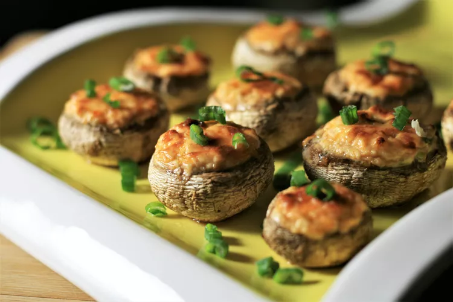

Home
Air Fryer Stuffed Mushrooms

Description
These low-carb mushrooms are easy to make and cook in under 10 minutes in your air fryer. They make the perfect game-day snack, but also impress as a first course when having friends over for an elegant dinner.
Ingredients
- 1 (16 ounce) package whole white button mushrooms
- 2 scallions
- 4 ounces cream cheese, softened
- ¼ cup finely shredded sharp Cheddar cheese
- ¼ teaspoon ground paprika
- 1 pinch salt
- cooking spray
Steps
- Using a damp cloth, gently clean mushrooms. Remove stems and discard.
- Mince scallions and separate white and green parts.
- Preheat an air fryer to 360 degrees F (182 degrees C).
- Combine cream cheese, Cheddar cheese, the white parts from the scallions, paprika, and salt in a small bowl. Stuff filling into the mushrooms, pressing it in to fill the cavity with the back of a small spoon.
- Spray the air fryer basket with cooking spray and set mushrooms inside. Depending on the size of your air fryer, you may have to do 2 batches.
- Cook mushrooms until filling is lightly browned, about 8 minutes. Repeat with remaining mushrooms.
- Sprinkle mushrooms with scallion greens and let cool for 5 minutes before serving.